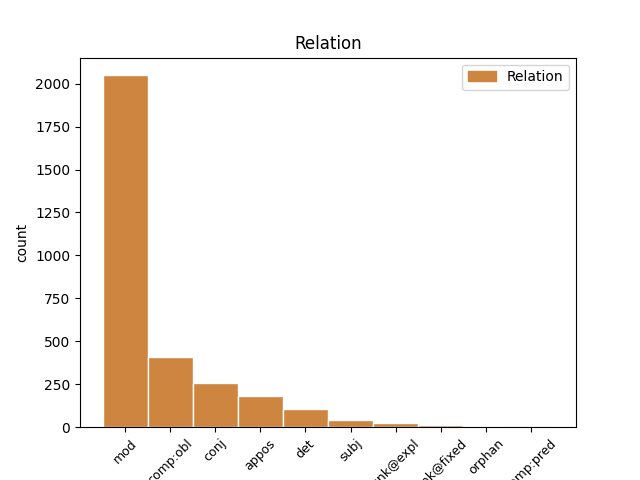
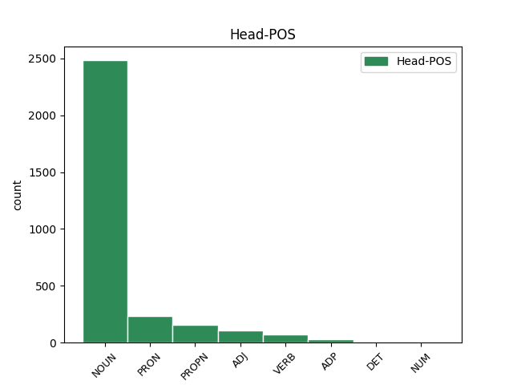
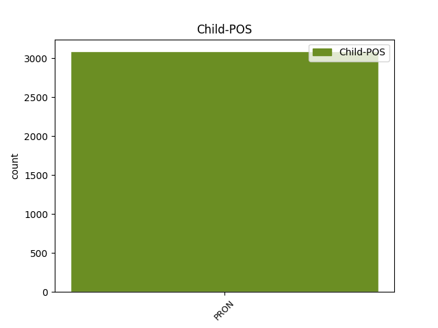

Distribution of features within this leaf



Agreement Rules sorted by frequency.
- When the dependent token is the conjunct(conj) of the head token, and the dependent token is PRON.
1 Din _ _ _ _ 0 _ _ _
2 vreo _ _ _ _ 0 _ _ _
3 boală _ _ _ _ 0 _ _ _
4 adecă _ _ _ _ 0 _ _ _
5 grea _ _ _ _ 0 _ _ _
6 , _ _ _ _ 0 _ _ _
7 răzmiriță răzmeriță NOUN Ncfsrn Case=Acc,Nom|Definite=Ind|Gender=Fem|Number=Sing 0 _ _ _
8 și _ _ _ _ 0 _ _ _
9 cealelalte celălalt PRON Pd3fpr Case=Acc,Nom|Gender=Fem|Number=Plur|Person=3|PronType=Dem 7 conj _ ref=PART_V_CAP_4.3b|SpaceAfter=No
10 . _ _ _ _ 0 _ _ _
1 Pentru _ _ _ _ 0 _ _ _
2 ziua _ _ _ _ 0 _ _ _
3 de _ _ _ _ 0 _ _ _
4 arătură _ _ _ _ 0 _ _ _
5 , _ _ _ _ 0 _ _ _
6 de _ _ _ _ 0 _ _ _
7 va _ _ _ _ 0 _ _ _
8 avea _ _ _ _ 0 _ _ _
9 stăpînul _ _ _ _ 0 _ _ _
10 moșii _ _ _ _ 0 _ _ _
11 trebuință _ _ _ _ 0 _ _ _
12 , _ _ _ _ 0 _ _ _
13 ca _ _ _ _ 0 _ _ _
14 să _ _ _ _ 0 _ _ _
15 i- _ _ _ _ 0 _ _ _
16 o _ _ _ _ 0 _ _ _
17 facă _ _ _ _ 0 _ _ _
18 clăcașii _ _ _ _ 0 _ _ _
19 în _ _ _ _ 0 _ _ _
20 lucru _ _ _ _ 0 _ _ _
21 , _ _ _ _ 0 _ _ _
22 sînt _ _ _ _ 0 _ _ _
23 datori _ _ _ _ 0 _ _ _
24 ca _ _ _ _ 0 _ _ _
25 toate _ _ _ _ 0 _ _ _
26 plugurile _ _ _ _ 0 _ _ _
27 cîte _ _ _ _ 0 _ _ _
28 să _ _ _ _ 0 _ _ _
29 întocmesc _ _ _ _ 0 _ _ _
30 pe _ _ _ _ 0 _ _ _
31 moșia _ _ _ _ 0 _ _ _
32 acelui _ _ _ _ 0 _ _ _
33 stăpîn _ _ _ _ 0 _ _ _
34 primăvara _ _ _ _ 0 _ _ _
35 , _ _ _ _ 0 _ _ _
36 să _ _ _ _ 0 _ _ _
37 -i _ _ _ _ 0 _ _ _
38 facă _ _ _ _ 0 _ _ _
39 cîte _ _ _ _ 0 _ _ _
40 o _ _ _ _ 0 _ _ _
41 zi _ _ _ _ 0 _ _ _
42 de _ _ _ _ 0 _ _ _
43 arătură _ _ _ _ 0 _ _ _
44 , _ _ _ _ 0 _ _ _
45 ori _ _ _ _ 0 _ _ _
46 primăvara _ _ _ _ 0 _ _ _
47 , _ _ _ _ 0 _ _ _
48 sau _ _ _ _ 0 _ _ _
49 toamna _ _ _ _ 0 _ _ _
50 , _ _ _ _ 0 _ _ _
51 iară _ _ _ _ 0 _ _ _
52 nu _ _ _ _ 0 _ _ _
53 fieșcare _ _ _ _ 0 _ _ _
54 clăcaș _ _ _ _ 0 _ _ _
55 să _ _ _ _ 0 _ _ _
56 -i _ _ _ _ 0 _ _ _
57 facă _ _ _ _ 0 _ _ _
58 cîte _ _ _ _ 0 _ _ _
59 o _ _ _ _ 0 _ _ _
60 zi _ _ _ _ 0 _ _ _
61 de _ _ _ _ 0 _ _ _
62 arătură _ _ _ _ 0 _ _ _
63 , _ _ _ _ 0 _ _ _
64 căci _ _ _ _ 0 _ _ _
65 mai _ _ _ _ 0 _ _ _
66 mulți _ _ _ _ 0 _ _ _
67 oameni om NOUN Ncmprn Case=Acc,Nom|Definite=Ind|Gender=Masc|Number=Plur 0 _ _ _
68 nu _ _ _ _ 0 _ _ _
69 au _ _ _ _ 0 _ _ _
70 fieșcare fieșcare PRON Pi3-sr Case=Acc,Nom|Number=Sing|Person=3|PronType=Ind 67 appos _ ref=COMPLETARE.3
71 plugul _ _ _ _ 0 _ _ _
72 lui _ _ _ _ 0 _ _ _
73 , _ _ _ _ 0 _ _ _
74 ci _ _ _ _ 0 _ _ _
75 să _ _ _ _ 0 _ _ _
76 întovărășesc _ _ _ _ 0 _ _ _
77 cîte _ _ _ _ 0 _ _ _
78 trei _ _ _ _ 0 _ _ _
79 și _ _ _ _ 0 _ _ _
80 cîte _ _ _ _ 0 _ _ _
81 patru _ _ _ _ 0 _ _ _
82 de _ _ _ _ 0 _ _ _
83 fac _ _ _ _ 0 _ _ _
84 un _ _ _ _ 0 _ _ _
85 plug _ _ _ _ 0 _ _ _
86 . _ _ _ _ 0 _ _ _
1 Din _ _ _ _ 0 _ _ _
2 Luminată _ _ _ _ 0 _ _ _
3 poruncă _ _ _ _ 0 _ _ _
4 a _ _ _ _ 0 _ _ _
5 Mării _ _ _ _ 0 _ _ _
6 sale _ _ _ _ 0 _ _ _
7 Prea _ _ _ _ 0 _ _ _
8 Înălțatului _ _ _ _ 0 _ _ _
9 nostru _ _ _ _ 0 _ _ _
10 Domn domn NOUN Ncmsrn Case=Acc,Nom|Definite=Ind|Gender=Masc|Number=Sing 0 _ _ _
11 Io io PRON Pp3msr Case=Acc,Nom|Gender=Masc|Number=Sing|Person=3|PronType=Prs 10 mod _ ref=ANAFORA.3
12 Ioann _ _ _ _ 0 _ _ _
13 Gheorghie _ _ _ _ 0 _ _ _
14 Caragea _ _ _ _ 0 _ _ _
15 , _ _ _ _ 0 _ _ _
16 Vv _ _ _ _ 0 _ _ _
17 . _ _ _ _ 0 _ _ _
1 Prea _ _ _ _ 0 _ _ _
2 Înălțate _ _ _ _ 0 _ _ _
3 Doamne _ _ _ _ 0 _ _ _
4 ! _ _ _ _ 0 _ _ _
5 După _ _ _ _ 0 _ _ _
6 luminată _ _ _ _ 0 _ _ _
7 porunca _ _ _ _ 0 _ _ _
8 Mării _ _ _ _ 0 _ _ _
9 tale _ _ _ _ 0 _ _ _
10 adunîndu _ _ _ _ 0 _ _ _
11 -ne _ _ _ _ 0 _ _ _
12 în _ _ _ _ 0 _ _ _
13 multe _ _ _ _ 0 _ _ _
14 rînduri _ _ _ _ 0 _ _ _
15 cu _ _ _ _ 0 _ _ _
16 toții _ _ _ _ 0 _ _ _
17 la _ _ _ _ 0 _ _ _
18 un _ _ _ _ 0 _ _ _
19 loc _ _ _ _ 0 _ _ _
20 , _ _ _ _ 0 _ _ _
21 am _ _ _ _ 0 _ _ _
22 cetit _ _ _ _ 0 _ _ _
23 cu _ _ _ _ 0 _ _ _
24 luare _ _ _ _ 0 _ _ _
25 aminte _ _ _ _ 0 _ _ _
26 Pravila _ _ _ _ 0 _ _ _
27 ce _ _ _ _ 0 _ _ _
28 s _ _ _ _ 0 _ _ _
29 -au _ _ _ _ 0 _ _ _
30 alcătuit _ _ _ _ 0 _ _ _
31 de _ _ _ _ 0 _ _ _
32 cătră _ _ _ _ 0 _ _ _
33 Măria mărie NOUN Ncfsry Case=Acc,Nom|Definite=Def|Gender=Fem|Number=Sing 0 _ _ _
34 ta tău PRON Ps2fsrs Case=Acc,Nom|Gender=Fem|Number=Sing|Number[psor]=Sing|Person=2|PronType=Prs 33 det _ ref=ANAFORA.1|SpaceAfter=No
35 , _ _ _ _ 0 _ _ _
36 și _ _ _ _ 0 _ _ _
37 ne _ _ _ _ 0 _ _ _
38 pliroforisirăm _ _ _ _ 0 _ _ _
39 , _ _ _ _ 0 _ _ _
40 că _ _ _ _ 0 _ _ _
41 alcătuirea _ _ _ _ 0 _ _ _
42 aceștii _ _ _ _ 0 _ _ _
43 Pravili _ _ _ _ 0 _ _ _
44 este _ _ _ _ 0 _ _ _
45 o _ _ _ _ 0 _ _ _
46 deslușire _ _ _ _ 0 _ _ _
47 a _ _ _ _ 0 _ _ _
48 Pravililor _ _ _ _ 0 _ _ _
49 Împărătești _ _ _ _ 0 _ _ _
50 , _ _ _ _ 0 _ _ _
51 ce _ _ _ _ 0 _ _ _
52 să _ _ _ _ 0 _ _ _
53 obicinuesc _ _ _ _ 0 _ _ _
54 aici _ _ _ _ 0 _ _ _
55 în _ _ _ _ 0 _ _ _
56 pămîntul _ _ _ _ 0 _ _ _
57 nostru _ _ _ _ 0 _ _ _
58 , _ _ _ _ 0 _ _ _
59 și _ _ _ _ 0 _ _ _
60 a _ _ _ _ 0 _ _ _
61 vechilor _ _ _ _ 0 _ _ _
62 , _ _ _ _ 0 _ _ _
63 și _ _ _ _ 0 _ _ _
64 a _ _ _ _ 0 _ _ _
65 canonisitelor _ _ _ _ 0 _ _ _
66 obiceaiuri _ _ _ _ 0 _ _ _
67 ale _ _ _ _ 0 _ _ _
68 pămîntului _ _ _ _ 0 _ _ _
69 , _ _ _ _ 0 _ _ _
70 nefiind _ _ _ _ 0 _ _ _
71 împotrivitoare _ _ _ _ 0 _ _ _
72 celor _ _ _ _ 0 _ _ _
73 vechi _ _ _ _ 0 _ _ _
74 urmate _ _ _ _ 0 _ _ _
75 pînă _ _ _ _ 0 _ _ _
76 acum _ _ _ _ 0 _ _ _
77 . _ _ _ _ 0 _ _ _
1 Cînd _ _ _ _ 0 _ _ _
2 pentru _ _ _ _ 0 _ _ _
3 aceaiași _ _ _ _ 0 _ _ _
4 provlimă _ _ _ _ 0 _ _ _
5 să _ _ _ _ 0 _ _ _
6 pune _ _ _ _ 0 _ _ _
7 înainte _ _ _ _ 0 _ _ _
8 de _ _ _ _ 0 _ _ _
9 cătră _ _ _ _ 0 _ _ _
10 unul _ _ _ _ 0 _ _ _
11 și _ _ _ _ 0 _ _ _
12 același _ _ _ _ 0 _ _ _
13 doao _ _ _ _ 0 _ _ _
14 , _ _ _ _ 0 _ _ _
15 sau _ _ _ _ 0 _ _ _
16 mai _ _ _ _ 0 _ _ _
17 multe _ _ _ _ 0 _ _ _
18 cărți _ _ _ _ 0 _ _ _
19 împotrivitoare împotrivitor ADJ Afpfprn Case=Acc,Nom|Definite=Ind|Degree=Pos|Gender=Fem|Number=Plur 0 _ _ _
20 una unul PRON Pi3fsr Case=Acc,Nom|Gender=Fem|Number=Sing|Person=3|PronType=Ind 19 subj _ ref=PART_V_CAP_2a.30
21 altia _ _ _ _ 0 _ _ _
22 , _ _ _ _ 0 _ _ _
23 n- _ _ _ _ 0 _ _ _
24 are _ _ _ _ 0 _ _ _
25 puteare _ _ _ _ 0 _ _ _
26 niciuna _ _ _ _ 0 _ _ _
27 . _ _ _ _ 0 _ _ _
1 Cînd _ _ _ _ 0 _ _ _
2 cel _ _ _ _ 0 _ _ _
3 ce _ _ _ _ 0 _ _ _
4 face _ _ _ _ 0 _ _ _
5 diiată _ _ _ _ 0 _ _ _
6 va _ _ _ _ 0 _ _ _
7 dărui _ _ _ _ 0 _ _ _
8 legat _ _ _ _ 0 _ _ _
9 vreun _ _ _ _ 0 _ _ _
10 lucru _ _ _ _ 0 _ _ _
11 strein _ _ _ _ 0 _ _ _
12 știindu _ _ _ _ 0 _ _ _
13 -l _ _ _ _ 0 _ _ _
14 , _ _ _ _ 0 _ _ _
15 și _ _ _ _ 0 _ _ _
16 pre _ _ _ _ 0 _ _ _
17 urmă _ _ _ _ 0 _ _ _
18 judecîndu _ _ _ _ 0 _ _ _
19 -se _ _ _ _ 0 _ _ _
20 Stăpînul _ _ _ _ 0 _ _ _
21 și _ _ _ _ 0 _ _ _
22 -l _ _ _ _ 0 _ _ _
23 va _ _ _ _ 0 _ _ _
24 lua _ _ _ _ 0 _ _ _
25 , _ _ _ _ 0 _ _ _
26 atunci _ _ _ _ 0 _ _ _
27 moștenitoriul _ _ _ _ 0 _ _ _
28 să _ _ _ _ 0 _ _ _
29 îndatorează _ _ _ _ 0 _ _ _
30 să _ _ _ _ 0 _ _ _
31 răspunză _ _ _ _ 0 _ _ _
32 legatarului _ _ _ _ 0 _ _ _
33 prețul _ _ _ _ 0 _ _ _
34 acelui _ _ _ _ 0 _ _ _
35 lucru _ _ _ _ 0 _ _ _
36 , _ _ _ _ 0 _ _ _
37 iar _ _ _ _ 0 _ _ _
38 cînd _ _ _ _ 0 _ _ _
39 cel _ _ _ _ 0 _ _ _
40 ce _ _ _ _ 0 _ _ _
41 au _ _ _ _ 0 _ _ _
42 făcut _ _ _ _ 0 _ _ _
43 diiată _ _ _ _ 0 _ _ _
44 va _ _ _ _ 0 _ _ _
45 fi _ _ _ _ 0 _ _ _
46 dăruit _ _ _ _ 0 _ _ _
47 lucru _ _ _ _ 0 _ _ _
48 strein _ _ _ _ 0 _ _ _
49 neștiindu _ _ _ _ 0 _ _ _
50 -l _ _ _ _ 0 _ _ _
51 , _ _ _ _ 0 _ _ _
52 și _ _ _ _ 0 _ _ _
53 lucrul _ _ _ _ 0 _ _ _
54 acela _ _ _ _ 0 _ _ _
55 să _ _ _ _ 0 _ _ _
56 va _ _ _ _ 0 _ _ _
57 lua _ _ _ _ 0 _ _ _
58 de _ _ _ _ 0 _ _ _
59 Stăpîn _ _ _ _ 0 _ _ _
60 cu _ _ _ _ 0 _ _ _
61 judecată _ _ _ _ 0 _ _ _
62 , _ _ _ _ 0 _ _ _
63 atunci _ _ _ _ 0 _ _ _
64 moștenitoriul _ _ _ _ 0 _ _ _
65 nu _ _ _ _ 0 _ _ _
66 e _ _ _ _ 0 _ _ _
67 datoriu dator ADJ Afpmsrn Case=Acc,Nom|Definite=Ind|Degree=Pos|Gender=Masc|Number=Sing 0 _ _ _
68 nimic nimic PRON Pz3msr Case=Acc,Nom|Gender=Masc|Number=Sing|Person=3|PronType=Neg 67 comp:obl _ ref=PART_IV_CAP_4.9|SpaceAfter=No
69 . _ _ _ _ 0 _ _ _
1 Cum _ _ _ _ 0 _ _ _
2 zice _ _ _ _ 0 _ _ _
3 și _ _ _ _ 0 _ _ _
4 Damaschin _ _ _ _ 0 _ _ _
5 , _ _ _ _ 0 _ _ _
6 că _ _ _ _ 0 _ _ _
7 rușinea _ _ _ _ 0 _ _ _
8 easte _ _ _ _ 0 _ _ _
9 ca ca ADP Spsa AdpType=Prep|Case=Acc 0 _ _ _
10 să _ _ _ _ 0 _ _ _
11 te tu PRON Pp2-sa--------w Case=Acc|Number=Sing|Person=2|PronType=Prs|Strength=Weak 9 unk@expl _ _
12 temi _ _ _ _ 0 _ _ _
13 de _ _ _ _ 0 _ _ _
14 toate _ _ _ _ 0 _ _ _
15 lucrurele _ _ _ _ 0 _ _ _
16 făcute _ _ _ _ 0 _ _ _
17 strîmb _ _ _ _ 0 _ _ _
18 , _ _ _ _ 0 _ _ _
19 ce _ _ _ _ 0 _ _ _
20 face _ _ _ _ 0 _ _ _
21 omulu _ _ _ _ 0 _ _ _
22 . _ _ _ _ 0 _ _ _
1 Zise _ _ _ _ 0 _ _ _
2 Iisus _ _ _ _ 0 _ _ _
3 lui _ _ _ _ 0 _ _ _
4 : _ _ _ _ 0 _ _ _
5 Aceluia _ _ _ _ 0 _ _ _
6 ce _ _ _ _ 0 _ _ _
7 -i _ _ _ _ 0 _ _ _
8 spălat _ _ _ _ 0 _ _ _
9 nu _ _ _ _ 0 _ _ _
10 trebuiaște _ _ _ _ 0 _ _ _
11 să _ _ _ _ 0 _ _ _
12 -l _ _ _ _ 0 _ _ _
13 spăl _ _ _ _ 0 _ _ _
14 , _ _ _ _ 0 _ _ _
15 numai _ _ _ _ 0 _ _ _
16 picioarele _ _ _ _ 0 _ _ _
17 , _ _ _ _ 0 _ _ _
18 că _ _ _ _ 0 _ _ _
19 iaste _ _ _ _ 0 _ _ _
20 tot _ _ _ _ 0 _ _ _
21 curat _ _ _ _ 0 _ _ _
22 ; _ _ _ _ 0 _ _ _
23 și _ _ _ _ 0 _ _ _
24 voi _ _ _ _ 0 _ _ _
25 sânteți _ _ _ _ 0 _ _ _
26 curați curat ADJ Afpmprn Case=Acc,Nom|Definite=Ind|Degree=Pos|Gender=Masc|Number=Plur 0 _ _ _
27 , _ _ _ _ 0 _ _ _
28 ce _ _ _ _ 0 _ _ _
29 nu _ _ _ _ 0 _ _ _
30 toți tot PRON Pi3mpr Case=Acc,Nom|Gender=Masc|Number=Plur|Person=3|PronType=Ind 26 orphan _ ref=IOAN13.10|SpaceAfter=No
31 . _ _ _ _ 0 _ _ _
Disagree Examples:
1 Și _ _ _ _ 0 _ _ _
2 deaca _ _ _ _ 0 _ _ _
3 -l _ _ _ _ 0 _ _ _
4 samănă _ _ _ _ 0 _ _ _
5 , _ _ _ _ 0 _ _ _
6 creaște _ _ _ _ 0 _ _ _
7 și _ _ _ _ 0 _ _ _
8 să _ _ _ _ 0 _ _ _
9 face _ _ _ _ 0 _ _ _
10 mai _ _ _ _ 0 _ _ _
11 mare _ _ _ _ 0 _ _ _
12 de _ _ _ _ 0 _ _ _
13 toate _ _ _ _ 0 _ _ _
14 buruianele _ _ _ _ 0 _ _ _
15 și _ _ _ _ 0 _ _ _
16 face _ _ _ _ 0 _ _ _
17 stîlpări _ _ _ _ 0 _ _ _
18 mari _ _ _ _ 0 _ _ _
19 , _ _ _ _ 0 _ _ _
20 cît _ _ _ _ 0 _ _ _
21 pot _ _ _ _ 0 _ _ _
22 , _ _ _ _ 0 _ _ _
23 supt _ _ _ _ 0 _ _ _
24 umbra umbră NOUN Ncfsry Case=Acc,Nom|Definite=Def|Gender=Fem|Number=Sing 0 _ _ _
25 lui el PRON Pp3mso Case=Gen|Gender=Masc|Number=Sing|Person=3|PronType=Prs 24 mod _ ref=MARC4.32|SpaceAfter=No
26 , _ _ _ _ 0 _ _ _
27 păsările _ _ _ _ 0 _ _ _
28 ceriului _ _ _ _ 0 _ _ _
29 să _ _ _ _ 0 _ _ _
30 sălășuiască _ _ _ _ 0 _ _ _
31 . _ _ _ _ 0 _ _ _
1 Iară _ _ _ _ 0 _ _ _
2 fără _ _ _ _ 0 _ _ _
3 pildă _ _ _ _ 0 _ _ _
4 nu _ _ _ _ 0 _ _ _
5 grăiia _ _ _ _ 0 _ _ _
6 lor _ _ _ _ 0 _ _ _
7 , _ _ _ _ 0 _ _ _
8 dară _ _ _ _ 0 _ _ _
9 deusebi _ _ _ _ 0 _ _ _
10 ucenicilor ucenic NOUN Ncmpoy Case=Dat,Gen|Definite=Def|Gender=Masc|Number=Plur 0 _ _ _
11 lui el PRON Pp3mso Case=Gen|Gender=Masc|Number=Sing|Person=3|PronType=Prs 10 mod _ ref=MARC4.34
12 toate _ _ _ _ 0 _ _ _
13 le _ _ _ _ 0 _ _ _
14 spunea _ _ _ _ 0 _ _ _
15 . _ _ _ _ 0 _ _ _
1 Pentru _ _ _ _ 0 _ _ _
2 ce _ _ _ _ 0 _ _ _
3 că _ _ _ _ 0 _ _ _
4 de _ _ _ _ 0 _ _ _
5 multe _ _ _ _ 0 _ _ _
6 ori _ _ _ _ 0 _ _ _
7 fiind _ _ _ _ 0 _ _ _
8 el _ _ _ _ 0 _ _ _
9 în _ _ _ _ 0 _ _ _
10 fiiară _ _ _ _ 0 _ _ _
11 și _ _ _ _ 0 _ _ _
12 în _ _ _ _ 0 _ _ _
13 lanțure _ _ _ _ 0 _ _ _
14 , _ _ _ _ 0 _ _ _
15 să _ _ _ _ 0 _ _ _
16 rumpea _ _ _ _ 0 _ _ _
17 de _ _ _ _ 0 _ _ _
18 pre _ _ _ _ 0 _ _ _
19 el _ _ _ _ 0 _ _ _
20 lanțurile _ _ _ _ 0 _ _ _
21 și _ _ _ _ 0 _ _ _
22 fiarăle _ _ _ _ 0 _ _ _
23 să sine PRON Px3--a--------w Case=Acc|Person=3|PronType=Prs|Strength=Weak 24 unk@expl _ ref=MARC5.4
24 sfărîma sfărâmă NOUN Ncfsry Case=Acc,Nom|Definite=Def|Gender=Fem|Number=Sing 0 _ _ _
25 și _ _ _ _ 0 _ _ _
26 nime _ _ _ _ 0 _ _ _
27 nu _ _ _ _ 0 _ _ _
28 putea _ _ _ _ 0 _ _ _
29 pre _ _ _ _ 0 _ _ _
30 el _ _ _ _ 0 _ _ _
31 să _ _ _ _ 0 _ _ _
32 -l _ _ _ _ 0 _ _ _
33 îmblînzească _ _ _ _ 0 _ _ _
34 . _ _ _ _ 0 _ _ _
1 Şi _ _ _ _ 0 _ _ _
2 -l _ _ _ _ 0 _ _ _
3 întrebă _ _ _ _ 0 _ _ _
4 pre _ _ _ _ 0 _ _ _
5 el _ _ _ _ 0 _ _ _
6 : _ _ _ _ 0 _ _ _
7 ce _ _ _ _ 0 _ _ _
8 ți tu PRON Pp2-sd--------w Case=Dat|Number=Sing|Person=2|PronType=Prs|Strength=Weak 10 comp:obl _ ref=MARC5.9|SpaceAfter=No
9 -e _ _ _ _ 0 _ _ _
10 numele nume NOUN Ncmsry Case=Acc,Nom|Definite=Def|Gender=Masc|Number=Sing 0 _ _ _
11 ? _ _ _ _ 0 _ _ _
1 Și _ _ _ _ 0 _ _ _
2 răspunse _ _ _ _ 0 _ _ _
3 grăind _ _ _ _ 0 _ _ _
4 : _ _ _ _ 0 _ _ _
5 legheon legiune NOUN Ncmsrn Case=Acc,Nom|Definite=Ind|Gender=Masc|Number=Sing 0 _ _ _
6 mi- eu PRON Pp1-sd--------w Case=Dat|Number=Sing|Person=1|PronType=Prs|Strength=Weak 5 comp:obl _ ref=MARC5.9|SpaceAfter=No
7 e _ _ _ _ 0 _ _ _
8 numele _ _ _ _ 0 _ _ _
9 , _ _ _ _ 0 _ _ _
10 că _ _ _ _ 0 _ _ _
11 mulți _ _ _ _ 0 _ _ _
12 sîntem _ _ _ _ 0 _ _ _
13 . _ _ _ _ 0 _ _ _